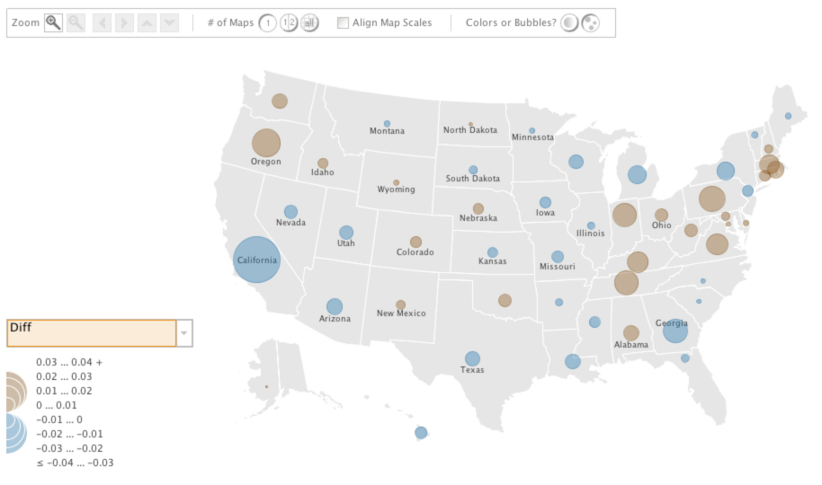
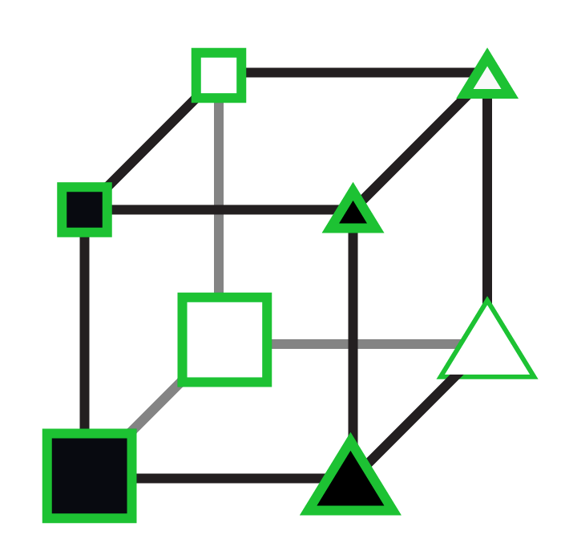
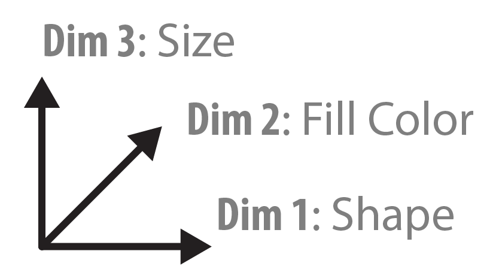
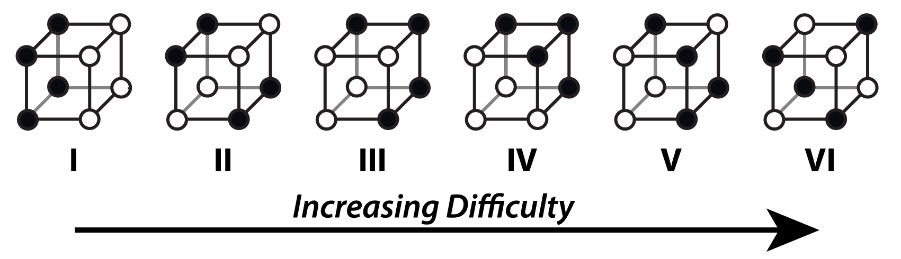
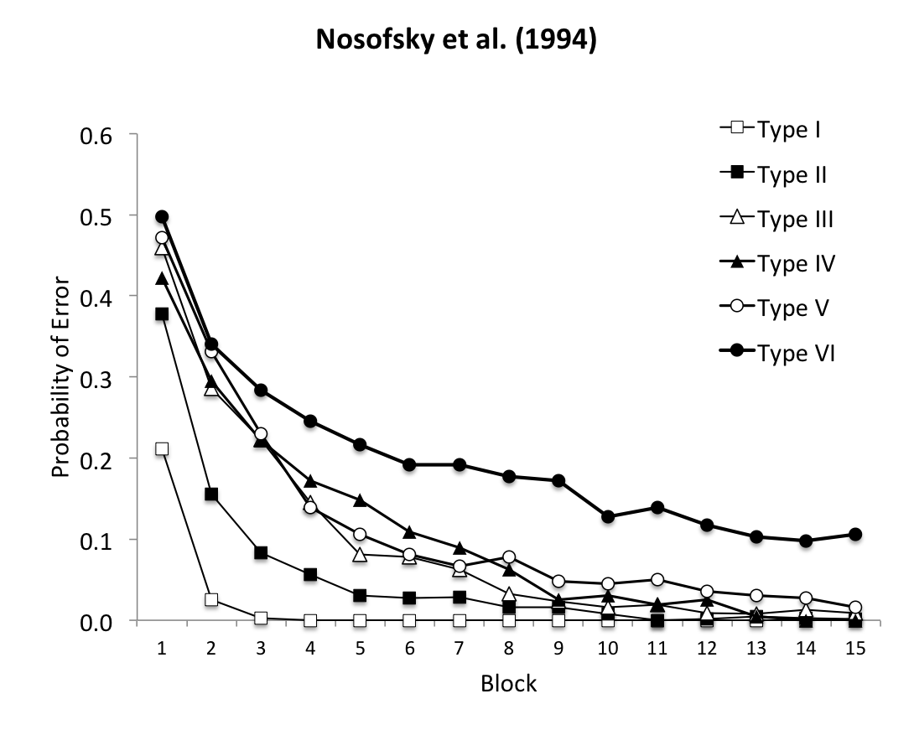
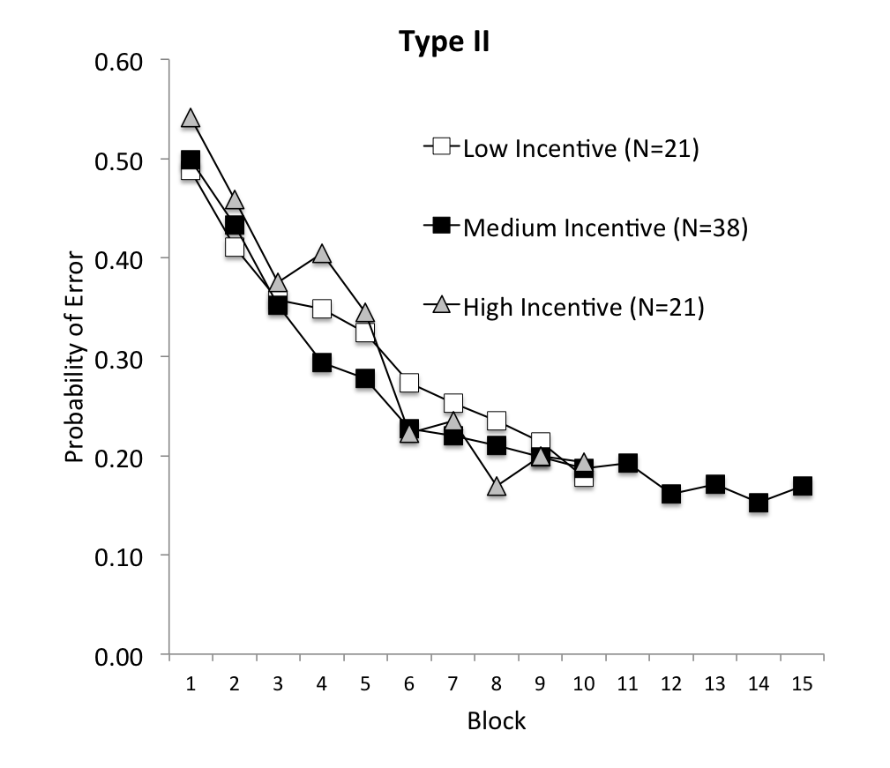
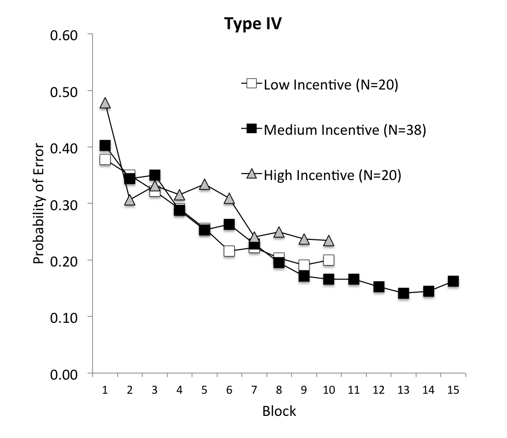
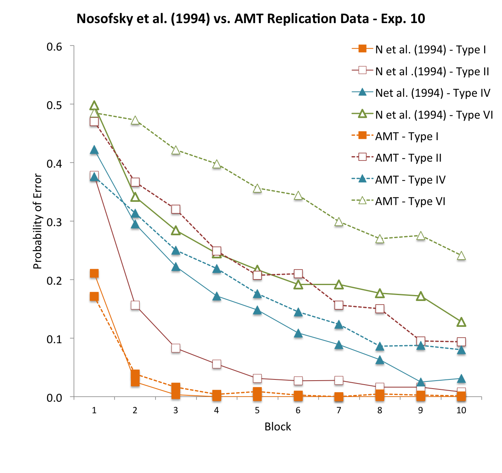
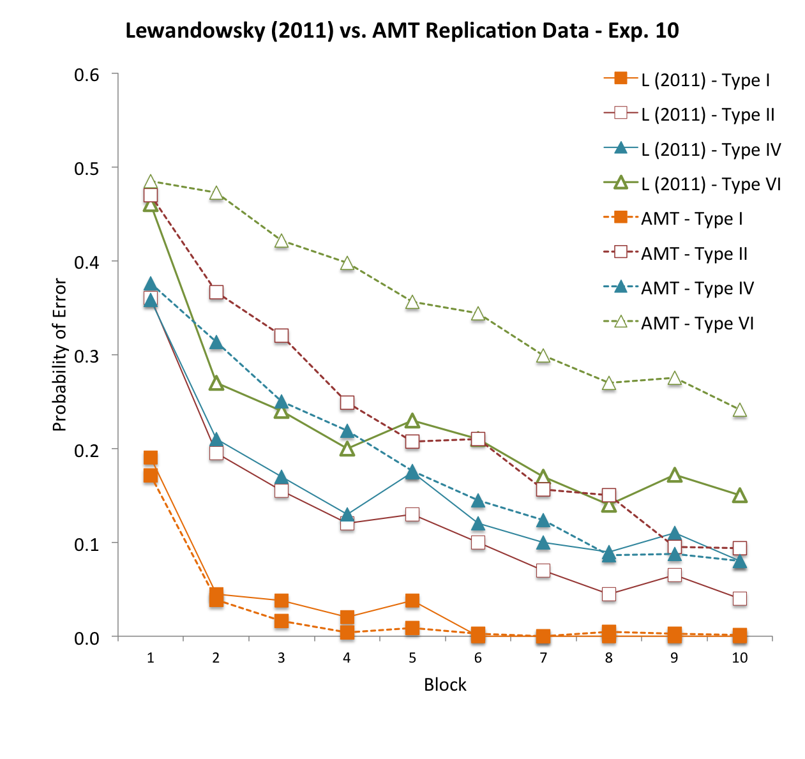

name: title class: center, middle <div class="rotatetitle"> # Using .blue[Mechanical Turk] for Cognition Experiments .author[ John McDonnell ([@johnvmcdonnell](http://twitter.com/johnvmcdonnell)) & Todd Gureckis ([@todd_gureckis](http://twitter.com/todd_gureckis)) _[Computation and Cognition Lab](http://gureckislab.org)_ _Department of Psychology_ _New York University_ ] </div> --- name: overview # Overview 1. What is [Amazon Mechanical Turk](https://www.mturk.com) (AMT)? - Who are the people in the system (demographics, etc...)? - How can it be used for research? - How good is the data? 2. What are the mechanics of using the system? - Step through setting up account - Using built-in tools to create simple form-based experiments 3. Using custom software to run dynamic experiments (psiTurk) - Introduce a [simple Python-based web-app](https://github.com/NYUCCL/psiTurk) we developed which could be a starting framework for your experiment - Using the AMT sandbox to develop and test your app - Manage hits using command-line tools (avoid too many visits to Amazon's site) --- name: credits # On the shoulders of giants... <!-- .right[<img src="http://green-leads.web5.hubspot.com/Portals/53598/images/logo1.gif">] --> <div class="people"> <img src="images/Mason.jpg" width="125" align="left" style="margin-right: 50px; margin-top: 20px;"> ### [Winter Mason](http://www.stevens.edu/provost/directory/faculty_profile.php?faculty_id=1687) (Asst. Prof at Stevens Institute, formerly Yahoo! Research) A social psychologist who really pioneered the documentation of using Mechanical Turk for behavioral researchers. </div> <div class="people"> <img src="images/Suri200.jpg" width="125" align="left" style="margin-right: 50px; margin-top: 20px;"> ### [Siddharth Suri](http://www.sidsuri.com/About_Sid.html) (Microsoft Research, formerly Yahoo! Research) A computer scientist doing web-based behavioral experiments on how aspect of social network structure influence human behavior. </div> ### They have created some helpful resources - A really helpful and informative [post](http://smallsocialsystems.com/blog/?p=95) on Winter's blog - CogSci2011 [workshop](http://cognitivesciencesociety.org/uploads/2011-t4.pdf): "How to use Mechanical Turk for Cognitive Science Research" - Mason, W. & Suri, S. (2012). [A Guide to Behavioral Experiments on Mechanical Turk](http://www.springerlink.com/content/5236n965288116v8/fulltext.pdf). _Behavior Research Methods_, 44(1), 1-23. --- name: goals class: shortlist, middle # Our three goals 1. Help you decide if it is right to use in your work 2. Share what we've learned in the process of collecting data with the system 3. Describe our system for helping you develop your own experiments --- name: whatisamt class: center, middle # What is ".blue[Mechanical Turk]"? --- .task[Part 1: What is AMT?] # The history <img src="images/bezos.jpg" width="250" align="right"><br> - Developed by [Amazon.com](http://amazon.com) by Peter Cohen - Originally for in-house use to detect duplicate product postings on Amazon's site .red[*] - Jeff Bezos calls it "artificial artificial intelligence" - Name originates from a mechanical chess illusion/automaton by Wolfgang von Kempelen in the 18th century .footnote[.red[*] Nice summary in the [New York Times](http://www.nytimes.com/2007/03/25/business/yourmoney/25Stream.html)] --- .task[Part 1: What is AMT?] # The concept <img src="images/crowdsource.png" alt="Crowdsourcing" width="300" align="left"> "Normally, a human makes a request of a computer, and the computer does the computation of the task, but artificial artificial intelligences like Mechanical Turk invert all that. The computer has a task that is easy for a human but extraordinarily hard for the computer. So instead of calling a computer service to perform the function, it calls a human.” ### - Jeff Bezos --- .task[Part 1: What is AMT?] # What kinds of tasks? - Difficult for computer (or for use in training machine learning systems) - Provide three key words to describe a randomly selected image - Does this photograph contain a car? - Type the characters in this image (e.g., captcha) - Traditional "work" - Go to http://mycompany.com and email me some comments on what you think of the design - Write a positive review for this product online (pay per paragraph) - Translate this text from english to spanish - .green[Help with science!] - **Participate in my human cognition/perception/learning experiment!** --- name: terminology class: shortlist, middle .task[Part 1: What is AMT?] # Key terminology - .red[**HIT**] = Human Intelligence Task (a unit of work, e.g. a trial or an entire sequence of trials in an experiment) - .orange[**Requester**] = an entity (e.g., researcher) who posts .red[**HIT**]s - .blue[**Worker**] = a person who performs the task --- .task[Part 1: What is AMT?] # Who are the workers? - 46.80% US, 34% India, 19.20% Other - United States demographic - 55-65% female - Most make <$60k/year - Median age of 30 - Hold bachelor’s and are young - Distribution mostly similar to US internet pop. - See Ipeirotis, et al. (2010) or Mason and Siddharth (2011). --- .task[Part 1: What is AMT?] # US Distribution  Taken from this [website](http://www-958.ibm.com/software/data/cognos/manyeyes/visualizations/geographic-distribution-of-turkers). --- .task[Part 1: What is AMT?] # World Distribution <img src="images/world-turk-distribution.jpg" width="750"> Tamir (2011) --- .task[Part 1: What is AMT?] # What motivates workers? #.green.center[Money.] .smallquote[ Mitch Fernandez, 38, a disabled former United States Army linguist, said by e-mail that he became a Turk Worker for various reasons: “At first, I was just curious about the idea of crowdsourcing.” But he said he soon found that by working about two hours a day, he could often earn more than $100 a week. In the last nine months he made around $4,000, which he used to buy a high-definition television, a DVD player and a new subwoofer — all from Amazon.com.] .smallquote[ “I do this primarily for the money, but I also view it as a form of therapy to get me used to working again.” he explained. “The experience has gotten me thinking about pursuing a library science degree.” - From [New York Times](http://www.nytimes.com/2007/03/25/business/yourmoney/25Stream.html) ] <hr> .smallquote[ "Is it worthwhile? I was genuinely surprised by the experience. If you have the ability to throw down readable writing very quickly, you can earn minimum wage with the Turk – more than I ever expected. Given the short timeframe and the wide variety of tasks available, it’s something that you can sit down and do in short little bits when it’s convenient for you.” - From [The simple Dollar](http://www.thesimpledollar.com/2009/07/05/can-you-actually-earn-reasonable-money-from-mechanical-turk/) ] --- .task[Part 1: What is AMT?] # Compensation - Median wage is $1.38/hour - Short tasks (~5 mins) award around 10 cents - Requester can reject work and revoke payment - Can also **award bonuses** - Amazon takes 10% of payments - Amazon tries to stay out of disputes --- .task[Part 1: What is AMT?] # Why mess with this? - **Convenient** - and our scripts help you even more - **Fast** - collect LOTS of data quickly - collect large N studies - pilot study materials - norm/pretest stimuli - **Affordable** - Relative to fMRI incredibly cost effective - We paid about $2.00 for 15-25 minute session - **Anonymous** - Subject never meets experimenter, in some ways testing conditions more uniform since no RAs - Subjects unlikely to know about "your lab" and the types of studies you do - **Replicable** - Very easy to share your experiment code to let people replicate your work cheaply --- .task[Part 1: What is AMT?] # Why .red[stay away]? - **Quality assurance** Are people following instructions? Can they read them? Are they "bots" just trying to rip you off? - **Attrition** the cost (social or otherwise) for closing the browser and quitting the experiment is low - **Non-lab setting** - You don’t have control over distractions. - People literally could get up and leave for 1 hour in the middle of your experiment - **Undergrads = mturk population?** Is this really a different population? --- .task[Part 1: What is AMT?] # Ethical Issues - How much should you pay? As much as the market supports or should it match what you pay in the lab (roughly)? - Can you get IRB approval for your experiment (yes, you MUST run it by the IRB first) - Some IRBs are more cautious than they need to be, IMHO - Since participants never meet experimenter and are free to close browser and walk away at any moment the IRB issues seem non-existent (should be exempt, but check with your local IRB) - Main concern would be if materials/stimuli are controversial and might reflect poorly on the field, sponsors, or university - Wasn't very difficult to add to an existing IRB at NYU --- class: center, middle # How does the data compare to that collected in the lab? .red[*] .left.footnote[.red[*]Check out our discussion of this at our [Thinking about Thinking](http://gureckislab.org/blog/) blog ] --- name: replicationstudies .task[Part 1: What is AMT?] # Lots of interest in this... - Gosling, S.D., Vazire, S., Srivastava, S., & John, O.P. (2004). [Should we trust web-based studies? A comparative analysis of six preconceptions about Internet questionnaires](http://www.yalepeplab.com/teaching/psych231/documents/231_Gosling2004.pdf). _American Psychologist_, 59, 2, 93-104. - Paolacci, G., Chandler, J., & Ipeirotis, P. G. (2010). [Running experiments on Amazon Mechanical Turk](http://repub.eur.nl/res/pub/31983/jdm10630a[1].pdf). _Judgment and Decision Making_, 5, 411-419. - Germine, L., Nakayama, K., Duchaine, B.C., Chabris, C.F., Chatterjee, G. & Wilmer, J.B. (2012, in press). [Is the Web as good as the lab? Comparable performance from Web and lab in cognitive/perceptual experiments.](http://www.springerlink.com/content/f0244t772070138w/) _Psychonomic Bulletin & Review_. --- .task[Part 1: What is AMT?] # Does it replicate? - We recently attempted to replicate a classic categorization finding using AMT subjects - Shepard, R.N., Hovland, C.I., & Jenkins H.M. (1961). Learning and memorization of classifications. _Psychological Monographs: General and Applied_, 75(13), 1-41. - Was a good learning experience for what works (and what doesn't) - Part of a larger study replicating a number of classic findings (stroop, task-switching, simon, visual cuing, attentional blink, subliminal priming, category learning) - **Crump, M., McDonnell, J., & Gureckis, T.M. (in prep). Evaluating Amazon’s Mechanical Turk as a tool for experimental behavioral research: A critical look.** --- .task[Part 1: What is AMT?] # SHJ (1961) - Six different ways of classifying the same 8 items (geometric figures with 3 binary dimensions) into deterministic categories - Generally Type I is learned faster than Type II which is faster that Types III-V, with Type VI the hardest .center[   ] --- .task[Part 1: What is AMT?] # Try 1 .center[ <img src="images/exp8-amt.png" height="310"> ] --- .task[Part 1: What is AMT?] # Try 1 .center[ <img src="images/exp8-block2criterion.png" height="400"> ] --- class: center, middle # Maybe we weren't paying people enough? --- .task[Part 1: What is AMT?] # Try 2 .center[  ] --- .task[Part 1: What is AMT?] # Try 2 .center[  ] --- class: center, middle # Maybe people didn't read or understand the instructions? --- .task[Part 1: What is AMT?] # Try 3 .center[  ] --- .task[Part 1: What is AMT?] # Try 3 .center[  ] --- .task[Part 1: What is AMT?] # Try 3 - 100% of participants in the type I problem reached the learning criterion .red[*] - 73.1% reached criterion in the type II problem - 56.4% reach criterion in the type IV problem - 44.8% reach criterion in the type VI problem. .footnote[.red[*] 2 blocks in a row with 100% correct responses within the 10 training blocks] --- .task[Part 1: What is AMT?] # Summary - Eh, it's ok. not perfect. - Hard to tell if problems are with AMT data or with previous work (perhaps selection bias with university students?) - Important lessons - Payment doesn't have much effect beyond signup rate - Checking people read and comprehend instructions is critical - Cleaning up data may help, but good to decide on criterion ahead of time - Huge studies run in 3-4 days. Does this benefit outweight possible disadvantages? Do you trust your lab data more? - Note, our other studies (e.g., stroop, etc...) replicate with much higher fidelity. Learning experiments may reflect a sort of special case where caution is particularly advised. - See also [this slide](#replicationstudies) for references to other studies reporting success --- .task[Part 1: What is AMT?] # Can you actually publish this data? - Currently, few mainstream cognitive psychology papers which report findings based purely on AMT data - A few early examples of web-based experimentation in Cognitive Science (e.g., [Mark Steyvers](http://psiexp.ss.uci.edu/research/papers/causalinference.pdf)) - Used heavily in machine learning (e.g., NIPS), in many Cognitive Science Society conference papers, and work on collective/group behavior - We have a few papers about to be submitted based entirely on AMT data, so we'll see how it goes! - Obvious solution to reviewer objections is to replicate a few conditions or experiments in the lab as well - Easy to do since the code runs just as well in the lab as online --- class: center, middle # End of Part 1 ### .gray[Time for a break!] --- class: center, middle .task[Part 2: The mechanics] # What are the mechanics of using the system? --- class: middle .task[Part 2: The mechanics] # Two perspectives: 1. What is it like to use AMT as a [**Worker**](#terminology)? 2. What is it like to use AMT as a [**Requester**](#terminology)? --- .task[Part 2: The mechanics] # Using AMT as a .blue[**Worker**] 1. Sign up on Amazon's site 2. Search for tasks (i.e., .red[**HIT**]s) to do online through the AMT interface. 3. Worker accepts a .red[**HIT**]. The task appears in a frame within the AMT website. 4. After completing the .red[**HIT**], the worker signals to Amazon that they have completed the task <hr> Some important conceptual notes: - (as we will see) .orange[**Requester**]s send out a job with a certain number of .red[**HIT**]s - When a .blue[**Worker**] accepts the .red[**HIT**] is it removed from the .orange[**Requester**]'s account - If the .blue[**Worker**] doesn't want to do the task they have to _return_ the .red[**HIT**] to the .orange[**Requester**] so someone else can do it - As a .orange[**Requester**] you get to set how long a .red[**HIT**] can be "held" like this --- .task[Part 2: The mechanics] # What is a .red[**HIT**] ? - In our experiments, a .red[**HIT**] is typically an entire experiment (as might be done in the lab) - However, it is up to the .orange[**Requester**] to determine what constitutes a .red[**HIT**]. - Could be one trial in an experiment, and you just offer the .blue[**Worker**] as many .red[**HIT**]s as they care to do - Will see some examples in a minute... --- class: center, middle # Demo: Using AMT as a .blue[**Worker**] --- .task[Part 2: The mechanics] # Using AMT as a .orange[**Requester**] .red[John: fill this in similarly to "Worker" section?] 1. Sign up on Amazon's site 2. something... --- .task[Part 2: The mechanics] # Using AMT as a .orange[**Requester**] ### Two key types of .red[**HIT**]s - **Amazon Template** - Hosted directly on Amazon's servers - Mostly restricted to simple HTML - Easy to use (don't need your own server) - Tools for helping you "build" the question - **External Question** - Pushes user off the AMT site to your own website - You can leverage full power of the "Interweb" (custom Javascript, Flash, etc...) - You need to have a publically accessible webserver - Most coding involved - Our software is intended to help with this --- class: center, middle # Demo: Using AMT as a .orange[**Requester**] --- class: center, middle # End of Part 2 ### .gray[Time for a break!] --- class: center, middle .task[Part 3: Using psiTurk] # Using custom software to run dynamic experiments --- class: center, middle .task[Part 3: Using psiTurk] # psiTurk ### .gray[Our "framework" for doing online experiments] ### [https://github.com/NYUCCL/psiTurk](https://github.com/NYUCCL/psiTurk) <img src="images/github.png" width="200"> --- .task[Part 3: Using psiTurk] # Model, View, Controller (MVC) A common software development pattern. If you are _not_ a scientist and do end-user programming (e.g., Android, iOS, webapps), this is probably how you are designing things. <img src="images/MVC.png" align="right" width="350"> - **Model** is basically your data. - A common situation is for the model to contains the abstract logic of your application - What kind of data is being stored, how it is formatted, is there computation that the app is supposed to do? - **View** is the UI elements presented to a user of the software - Independent of the model - Idea is object-oriented encapsulation... the graphics people can design the interface while the engineers build the model - **Controller** is the "glue" which binds the model to the view --- .task[Part 3: Using psiTurk] # Software dependencies **Python** If you've never used Python before, we recommend you use the [Enthought Python distribution](http://www.enthought.com/repo/.epd_academic_installers), because it comes with easy_install, a tool for easily installing Python packages. Once you've installed Enthought, you should be able to open a terminal window and install **Flask** (the web server library we'll be using) and **SQLAlchemy** (the database manipulation package we'll be using) with the following command: .sh easy_install Flask-SQLAlchemy If you get a permissions error, try: .sh sudo easy_install Flask-SQLAlchemy (which will prompt you for your password) --- .task[Part 3: Using psiTurk] # Software dependencies You will also find it useful to install **boto**, a Python library which enables interaction with Amazon's Mechanical Turk servers to help assign credit to participants. To install: .sh easy_install boto Finally, you can try getting things up and running by cloning our repository using the following command: .sh git clone git://github.com/NYUCCL/psiTurk.git (Further instructions are provided here: [http://github.com/NYUCCL/psiTurk](http://github.com/NYUCCL/psiTurk))